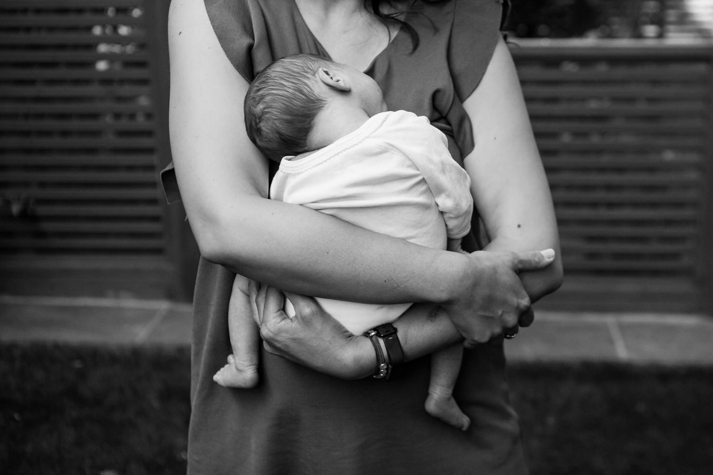

Design Challenge
What is the design challenge?
The design challenge explores the audience and their needs. It also ensures that the designer knows the company and user goals.
What is the design challenge?
The design challenge explores the audience and their needs. It also ensures that the designer knows the company and user goals.
Branching out research to similar organizations.
Collecting further research, specifically about other organizations with similar missions.
Talking to Augusta CPC volunteers and potential users.
Gaining further knowledge from those within Augusta Care Pregnancy Center to understand their mission fully. The purpose of the site, branding, goals, etc. Collecting information from potential website users on what resonates with them.
Getting more perspective on users and the company iteself.
Understanding who is involved, how, and why to get to the bottom of what they need.